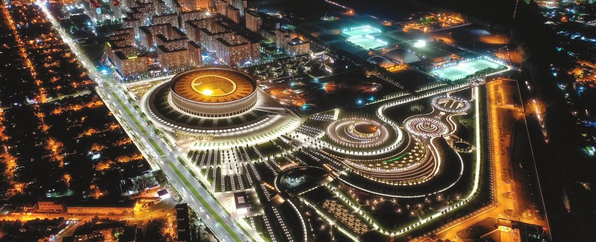
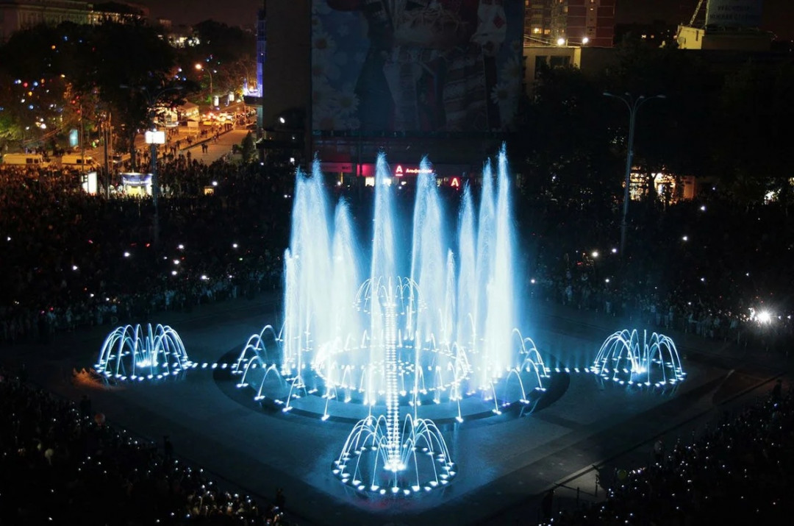
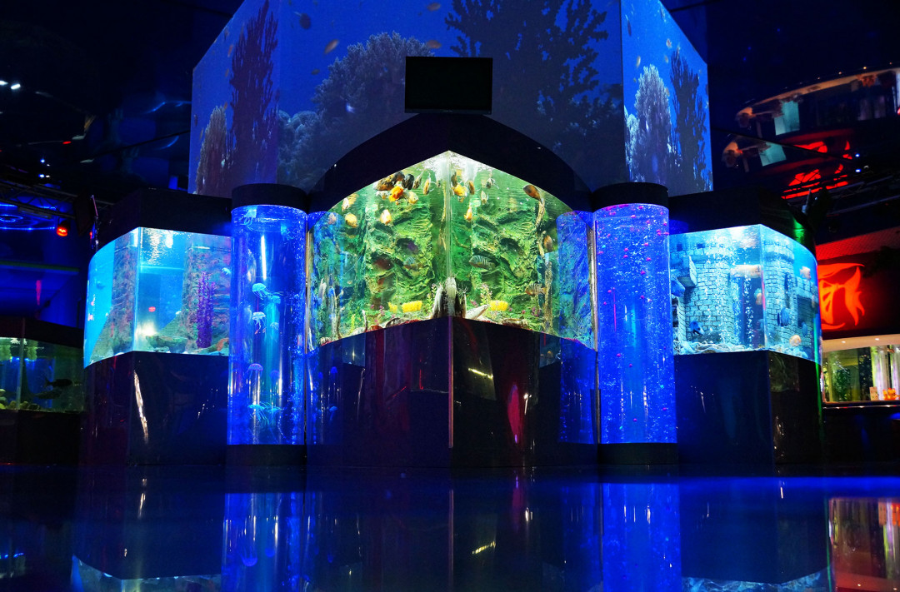

Места
Посетите парк "Краснодар" (Парк Галицкого) с его уникальным ландшафтным дизайном, знаменитую Красную улицу для прогулок, и музей-заповедник имени Фелицына, чтобы узнать больше о богатой истории Кубани.
Узнать больше
Еда
Насладитесь блюдами кубанской кухни: попробуйте борщ с пампушками, шашлык и домашнее вино в лучших кафе и ресторанах Краснодара. Мы подобрали для вас уютные заведения с душевной атмосферой.
Узнать больше
События
В Краснодаре регулярно проходят концерты, фестивали и ярмарки. В ближайшие недели вас ждут: фестиваль "Кубанские вечера", гастрономическая ярмарка на Красной улице и спектакли в театре драмы имени Горького..
Узнать больше
Ответ: Из аэропорта "Пашковский" можно добраться на автобусах №7, №53 или маршрутных такси. Железнодорожный вокзал "Краснодар-1" находится в центре, и оттуда легко доехать на трамвае или автобусе.
Ответ: Весна (март-май) и осень (сентябрь-октябрь) — самые комфортные сезоны для посещения города. Летом жарко, но это идеальное время для поездок на природу или к побережью.
Ответ:
Обязательно посетите парк "Краснодар" — жемчужину города.
Не забудьте попробовать свежие овощи, фрукты и местные сладости на рынке.
Используйте трамваи для передвижения — это удобный и живописный способ изучить город.